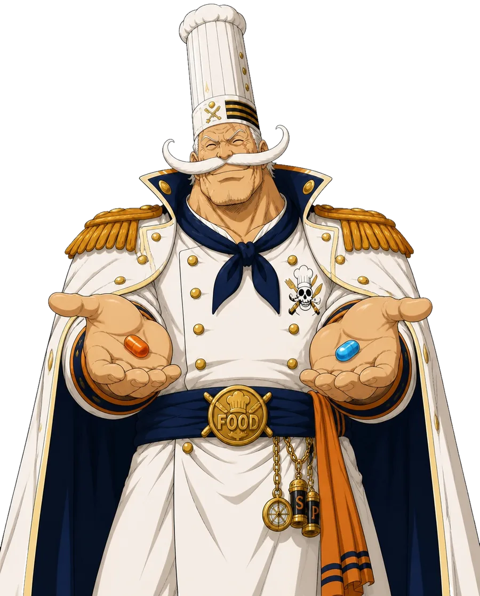
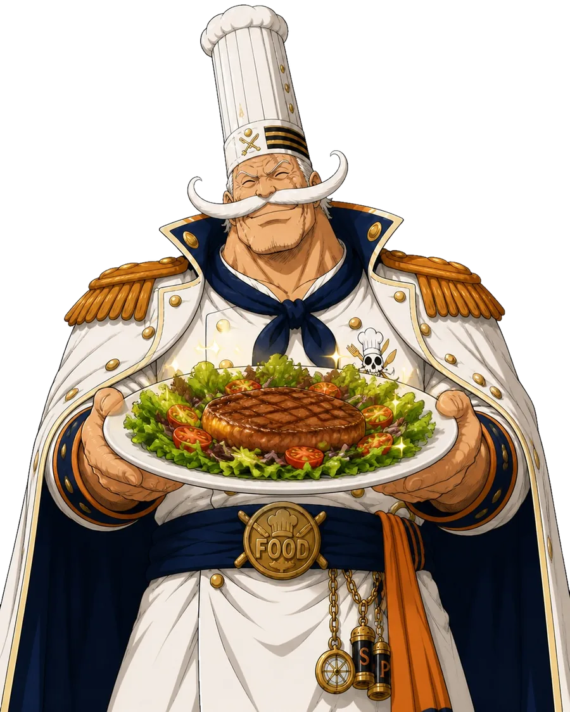

Tes clients ne sont pas tes clients.
Impossible de les fidéliser : pas de carte de fidélité utilisable, et tu deviens dépendant de la plateforme pour avoir des commandes.
Cap sur Tours — restaurants & food trucks indépendants
Tes plats à tes prix, tes clients à toi. Captain.Food veut te rendre ce que les grandes plateformes t'ont pris.
Une plateforme de commande locale à but non lucratif, portée par une association — construite pour ne jamais pouvoir se transformer en péage. Pour les indépendants de Tours. On démarre : rien n'est encore construit, c'est maintenant qu'on l'écrit ensemble.
Sans engagement · 0 commission sur tes plats · tu gardes tes clients — et tes plateformes actuelles.
Cette page parle 17 langues — et le produit fera pareil : Captain.Food s'adressera à tes clients dans leur langue.

Le constat
Sur les grandes plateformes, chaque commande te coûte plus cher que tu ne le crois.
Choisis ta plateforme, entre ton chiffre d'affaires mensuel — et vois où part chaque euro, chaque mois et chaque année.
Tes habitués, eux, peuvent commander en direct : sans commission.
Je reprends mes commandes0 € pour toi, dans tous les cas — c'est le client qui contribue, pas toi. Comment on se finance →
Le calcul de commission est factuel : ton chiffre d'affaires × le taux. Taux indicatifs et modifiables : Uber Eats ~25-35 %, Deliveroo ~25-30 % (fourchettes indicatives, sources publiques, 2024). « SMIC brut employeur » : coût mensuel employeur d'un SMIC temps plein — SMIC brut 1 867,02 € au 1ᵉʳ janvier 2026 (service-public.gouv.fr), charges patronales résiduelles comprises (~1 933 €). Ordre de grandeur, pas un relevé.
Sur une commande livrée, la commission (~30 %) pèse jusqu'à 10× ta marge nette (~3 %). Tu travailles, elle encaisse.
Sources : marge nette moyenne ~3 % (Observatoire Fiducial, communiqué UMIH/GHR/SNARR, juin 2025) ; défaillances 2024 et +80 % sur deux ans (Altares 2024, via L'Hôtellerie-Restauration/GHR). Une défaillance = sauvegarde, redressement ou liquidation ; environ 2 sur 3 finissent en liquidation.
« Je m'en moque, je répercute la commission sur mes prix. »
C'est ce que beaucoup se disent. Mais tes prix gonflent, le client commande moins — ou ailleurs. Ces commandes perdues, tu ne les vois jamais.
Répercuter la commission, ce n'est pas l'annuler. C'est la faire payer à ton chiffre d'affaires.
Et si tu la répercutes ? Regarde :
Tes prix en ligne gonflent nettement. Le client compare, te trouve plus cher, et commande moins — ou ailleurs. Ta marge est sauve sur le papier, mais les ventes perdues, tu ne les vois jamais.
Tu perds sur les deux tableaux : tes prix montent quand même (donc du volume en moins), et tu absorbes l'autre moitié (donc de la marge en moins).
Impossible de les fidéliser : pas de carte de fidélité utilisable, et tu deviens dépendant de la plateforme pour avoir des commandes.
Pour absorber leur commission, tu gonfles tes tarifs en ligne. Et tu subis les promotions forcées et les changements d'algorithme dont tu dépends — qui impactent ta position.
La commission ? On la met à terre.
0 % sur tes plats, toujours. Ta marge reste dans ta poche — pas dans celle d'une plateforme.
Je reprends mes commandes →
Deux logiques, un choix
D'un côté, la commission qui te ronge. De l'autre, 0 % et le contrôle de ton affaire. À toi de choisir ta voie.

| Critère | Plateforme à commission | |
|---|---|---|
| Commission sur tes plats | 25 à 35 % par commande | 0 % |
| Tes prix | Gonflés pour absorber la commission | Les mêmes qu'en salle |
| Ta clientèle | Confisquée : tu ne sais pas qui commande | À toi, dès la première commande directe |
| Ton canal | Le leur, tu suis leurs règles | Le tien, sous ton nom |
| Les règles du jeu | Elles changent, tu subis | Cadrées par un statut solidaire (cap ESUS/SCIC) |
Comparaison des modèles économiques, pas d'un acteur en particulier.
Ton pavillon, tes règles
Captain.Food est une plateforme de commande en ligne locale qui te redonne le contrôle. En ligne et à table, sous ton nom.

Tu gardes 100 % du prix de ce que tu vends. Toujours.
Pas une fiche noyée dans l'annuaire d'un autre : un vrai site de
commande à toi, tonresto.captain.food, ta vitrine en
ligne. Inclus. (Ton propre domaine tonresto.fr ? On te
le met en place, en option.)
Dès la première commande en direct, tu accèdes à ta base clients — pour les fidéliser et les faire revenir. C'est à toi.
Les mêmes prix qu'en salle. Rien à gonfler, rien à cacher.
Question légitime — et voici la réponse, en clair.
D'abord l'essentiel : toi, restaurateur, tu ne paies jamais de commission sur tes plats — 0 €, dans tous les cas. Le service n'est pas financé sur ton dos.
Il est financé par une contribution du client en prix libre, ajoutée à sa commande : chacun donne ce qu'il veut pour faire vivre une alternative juste. Un pari — celui que des clients informés préfèrent soutenir leur commerce local plutôt qu'une multinationale.
Un client ne contribue pas cette fois ? C'est OK : pas de contribution sur cette commande, et toujours 0 commission pour toi. Les frais de paiement par carte sont ceux, standards, de tout encaissement en ligne — jamais un pourcentage sur tes plats, jamais une surcharge ajoutée au client.
Comment on se finance, en clair →Exemple illustratif — une commande de 30 €
Le client ne souhaite pas contribuer ? C'est OK, sans jugement : pas de contribution sur cette commande. Toi, tu ne verses aucune commission sur tes plats, dans tous les cas.
Sur une plateforme à ~30 % de commission, il ne te resterait qu'environ 21 € sur la même commande.
S'il s'agit d'une commande livrée (canal à venir), un coût de service s'ajoutera pour payer le livreur dignement — partagé avec le client et plafonné par la marge que tu fixes, jamais une commission. Voir comment on paiera la livraison →
Montants donnés à titre d'exemple pour illustrer le principe, pas une grille tarifaire.
Ton site à toi : tonresto.captain.food (ou ton propre
tonresto.fr). Les commandes arriveront en direct depuis ton
site — de trois manières, toutes sans commission sur tes plats. À terme,
l'annuaire captain.food aidera les clients à découvrir
les indépendants du coin (bénéfice collectif à venir, pas un canal actif
aujourd'hui).
Tes clients commandent en ligne sur ton site, à ton nom. Pas d'intermédiaire qui se sert au passage.
Comment on paie la livraison →Le client commande à l'avance et récupère sur place. Simple, direct, sans matériel en plus.
Le client scanne, commande depuis sa place. La commande part en cuisine, et le paiement reste dans ta caisse habituelle — on ne touche pas à ton encaissement. C'est inclus, sans commission.
Un outil pour tout ton service, au lieu d'un canal de plus à gérer.
⚓ Maquettes · développement communautaire
Voici la maquette du produit qu'on veut mettre en place. Rien n'est encore construit — c'est là qu'on a besoin de toi. Teste les vues client, restaurateur et livreur, puis fais tes retours sur le WhatsApp de la communauté ou via le formulaire sous chaque maquette.
Sous chaque maquette, un formulaire pour laisser ton avis. On avance ensemble. ⚓
Un cap qui ne dérive pas
Captain.Food part d'une conviction simple : le numérique doit être un outil d'utilité publique, pas un péage aux mains de quelques géants de la tech. Le problème n'est pas qu'ils gagnent de l'argent — c'est qu'une fois que tu en dépends, ils peuvent presser, et rien ne les en empêche.
Alors on se donne des garde-fous qui tiendront. On vise l'agrément d'entreprise solidaire d'utilité sociale (ESUS) — un cadre juridique qui encadre la lucrativité et la raison d'être — avec pour cap une coopérative (SCIC), où restaurateurs, livreurs et citoyens auront voix au chapitre. L'objectif : par construction, ne pas pouvoir devenir ce qu'on combat.
Et pour que tu n'aies pas à nous croire sur parole : on ouvre nos comptes en public sur Open Collective — chaque euro reçu et dépensé, destiné à être visible par tous. La transparence radicale, pas le slogan.
Notre horizon : que Captain.Food soit un bien commun numérique, pas un actif privé. Le code est ouvert — sur GitHub — sous licence Captain.Food Coopyleft (copyleft basé sur l'AGPL v3, dans l'esprit de CoopCycle), dont l'usage commercial est réservé aux structures de l'économie sociale et solidaire — coopératives et organisations à but non lucratif. Notre cap : le faire reconnaître comme bien public numérique (digital public good) — pour qu'il soit vérifiable, et surtout réplicable : d'autres villes, d'autres coopératives pourront le reprendre. Un outil d'intérêt général, ça se partage — ça ne se revend pas. Lire le manifeste →
qui en ont assez de travailler pour la commission des autres.
qui veulent un canal de commande simple, à leur nom, sans matériel lourd.
attachés à leur quartier, à leurs habitués, à leur métier.
Si tu es une grande enseigne à la recherche du plus gros volume au moindre coût, on n'est probablement pas faits pour toi. Si tu veux reprendre la main sur ton affaire, embarque.
Port d'attache
Captain.Food démarre ici, à Tours, avec un premier groupe de restaurateurs. Pas partout, pas tout de suite : un territoire, bien fait, entre indépendants qui se connaissent.
On construit la plateforme avec les premiers restaurants qui embarquent — leurs retours façonnent l'outil. Rejoindre maintenant, c'est peser sur ce que Captain.Food deviendra.
Moins que tu ne crois.
Laisse-nous ton contact : on te recontacte pour te présenter Captain.Food, sans engagement.
Bien reçu ⚓ Bienvenue à bord !
On te recontacte très vite. Envie d'échanger tout de suite ?
Ou écris-nous à miam@captain.food.
Tout ce que les restaurateurs nous demandent — en clair, sans détour.
Pour toi : 0 % de commission sur tes plats, inscription gratuite, dans tous les cas. Le service est financé par une contribution libre du client, ajoutée à sa commande en toute transparence (0 € possible, sans jugement) — jamais par toi. Les frais de paiement par carte sont les frais bancaires standards de tout encaissement en ligne, jamais une surcharge ajoutée au client. Voir le détail complet, exemple à l'appui.
Ce qui se paie dans ta caisse habituelle (sur place, au comptoir), on n'y touche pas : c'est gratuit, point, hors de notre flux. La contribution ne concerne que les commandes payées en ligne via Captain.Food.
La livraison sera un canal à venir, pas encore actif. L'idée : payer correctement le livreur (on vise au moins 7 € la course). Tu y participerais uniquement sur tes commandes livrées, à hauteur de ce que ta marge permet — tu fixerais ton plancher, on ne descendrait jamais dessous. Le client paierait la différence, en transparence. Jamais une commission sur tes plats. Voir le calcul en détail, exemple à l'appui.
Non. Captain.Food vient en plus, sans exclusivité. Beaucoup de restaurants gardent les deux et voient Captain.Food comme leur canal direct, celui qu'ils maîtrisent.
Parce que ça ne te coûte rien et que tu n'as aucune exclusivité à donner. Tu es référencé, tu récupères ta base clients dès tes premières commandes directes, et tu façonnes l'outil pendant qu'on démarre. Les premiers embarqués sont ceux qui pèsent le plus.
Chaque commande passée en direct sur ta page t'appartient : tu accèdes aux coordonnées de tes clients (avec leur consentement) pour les fidéliser toi-même. Contrairement aux grandes plateformes, on ne confisque pas ta clientèle.
« Entreprise solidaire d'utilité sociale » : un agrément qui encadre juridiquement la lucrativité et impose une finalité sociale. C'est le cap qu'on vise — une garantie, à terme, que Captain.Food ne pourra pas dériver vers ce qu'on dénonce.
Deux cas. Si le client paie en caisse ou sur place, c'est hors de notre flux : 100 % gratuit, on n'y touche pas. S'il paie en ligne via le QR, une contribution libre peut s'ajouter, comme pour une commande en ligne. Dans tous les cas, sous ton nom, et 0 commission sur tes plats.